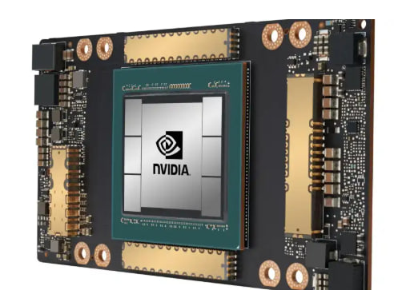

Головна
Головна
Головна
Головна
П’яте покоління комп’ютерів (з 1980-х років і до сьогодення) пов’язане з розвитком штучного інтелекту, експертних систем, машинного навчання та технологій обробки природної мови.
Головна ідея цього покоління полягає не лише в швидких обчисленнях, а в створенні систем, які здатні імітувати людське мислення: аналізувати, навчатися, робити висновки та приймати рішення.
Це період, коли комп’ютер перестає бути просто інструментом і поступово перетворюється на інтелектуального помічника.
Початок п’ятого покоління пов’язаний із розвитком штучного інтелекту в 1980-х роках, коли з’являються перші експертні системи, здатні приймати рішення на основі баз знань.
У 1990–2000-х роках стрімко розвивається Інтернет, що створює глобальне середовище для обміну інформацією та навчання алгоритмів на великих масивах даних.
У 2010-х роках відбувається революція в глибокому навчанні (deep learning), що дозволяє комп’ютерам розпізнавати зображення, мову та текст на рівні, близькому до людського.
Сучасні комп’ютери п’ятого покоління базуються на надпотужних мікропроцесорах, графічних процесорах (GPU), нейронних процесорах (NPU) та хмарних обчисленнях.

Основні технології включають: багатоядерні процесори, паралельні обчислення, розподілені системи, нейронні мережі.
Завдяки цьому комп’ютери можуть обробляти величезні обсяги даних у реальному часі.
Один із “батьків” нейронних мереж та штучного інтелекту.
Дослідження глибокого навчання та нейронних мереж.
Автор GAN — генеративних нейронних мереж.
Системи, які здатні виконувати завдання, що потребують людського інтелекту: розпізнавання мови, зображень, прийняття рішень.
Алгоритми, які навчаються на даних і покращують свої результати без прямого програмування кожного кроку.
Математичні моделі, які імітують роботу людського мозку і використовуються для складних задач аналізу інформації.
У п’ятому поколінні програмне забезпечення стало значно складнішим і більш автономним.
Системи можуть самостійно адаптуватися до нових даних, знаходити закономірності та робити прогнози.
З’являються голосові помічники, системи рекомендацій, автономні автомобілі та великі мовні моделі.
Програмування все більше зміщується від написання інструкцій до навчання моделей.